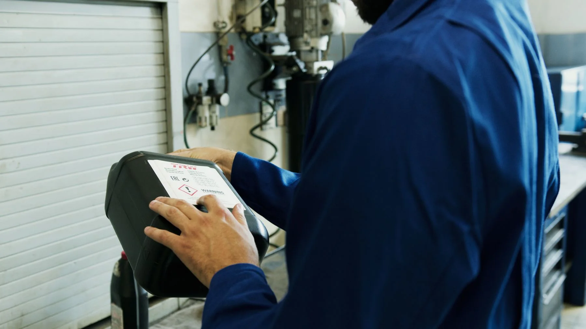
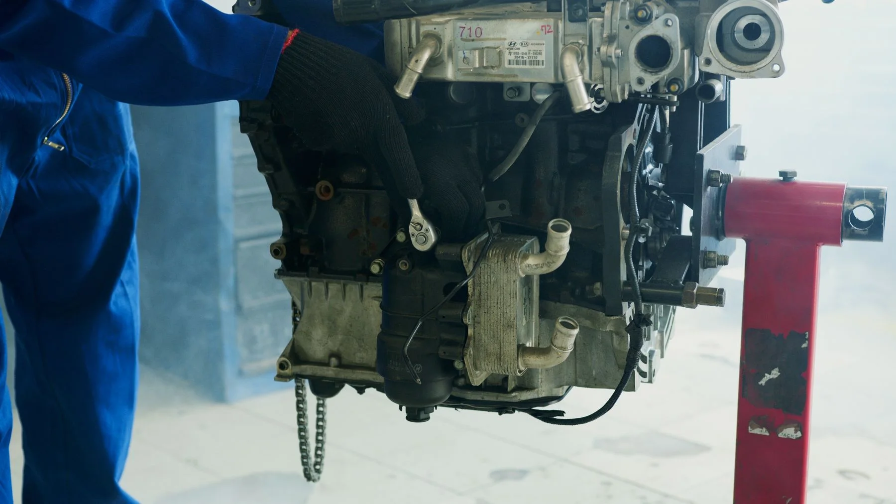
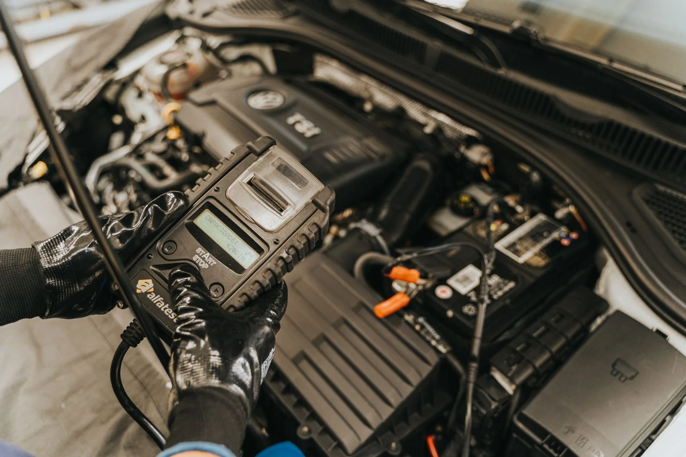
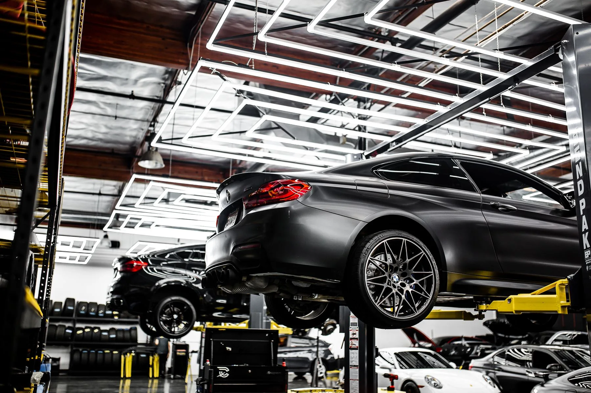

Diagnóstico automotivo
O foco da V&M é entender a causa do problema, com atenção aos sinais apresentados pelo veículo.
Precisão no diagnóstico.
Confiança na solução.





Seu veículo, avaliado com atenção e critério técnico. Conheça a proposta da V&M Auto Center.
Conversar com a V&MFotografias ilustrativas de banco. Não representam a equipe ou a oficina V&M.
O cuidado começa por entender a causa.
Esse é o compromisso da V&M Auto Center: avaliar cada veículo com atenção e critério técnico, buscando chegar à causa do problema.
Conte o que você percebeu no carro. A conversa começa pelos sinais e pelo histórico do veículo.
Conhecer a abordagemRuídos, luzes no painel ou mudanças no comportamento do carro merecem atenção. O relato ajuda a começar a avaliação.
O foco da V&M é entender a causa do problema, com atenção aos sinais apresentados pelo veículo.
O comportamento do carro e o histórico relatado ajudam a contextualizar a necessidade de atendimento.
Consulte a oficina sobre o atendimento indicado, os serviços disponíveis e a avaliação do seu caso.
Cada carro chega com uma história. Comece contando a sua.
Preparar meu contatoUma seleção de referências da rotina automotiva. Estas fotografias são ilustrativas e não representam serviços realizados pela V&M.
Componentes que fazem parte do universo automotivo.
Referência visual de um ambiente de manutenção.
Detalhes e observação no cuidado com o carro.
Algumas informações deixam o primeiro contato mais útil. Não precisa saber o nome da peça ou tentar descobrir a causa por conta própria.
Fale com a V&M Auto Center. Conte o que está acontecendo e consulte a disponibilidade de atendimento.
(11) 98904-4871Horário informado no perfil: 9h às 18h.
Consulte os dias e a agenda pelo WhatsApp.
Você revisa a mensagem no WhatsApp antes de enviar. Prefere ligar? Toque no telefone ao lado.
O primeiro contato ajuda a esclarecer o que você precisa e como seguir com o atendimento.
Pelo WhatsApp ou telefone (11) 98904-4871. Você pode usar a seleção acima para preparar uma mensagem com o assunto do seu veículo.
Não. Conte o que percebeu, quando começou e em quais situações acontece. O foco da V&M é buscar a causa com atenção e critério técnico.
Converse com a V&M sobre a necessidade do seu veículo. A disponibilidade de cada serviço e as condições de atendimento são confirmadas diretamente com a oficina.
O perfil informa o intervalo de 9h às 18h. Confirme os dias de funcionamento e a disponibilidade antes de se deslocar.
Apresente o veículo e o que está acontecendo pelo WhatsApp. Consulte a oficina sobre a avaliação necessária e as condições do orçamento.
Peça a localização atualizada pelo WhatsApp da V&M antes da visita. O endereço será incluído nesta página após confirmação.
Uma conversa sobre o seu veículo começa por aqui.